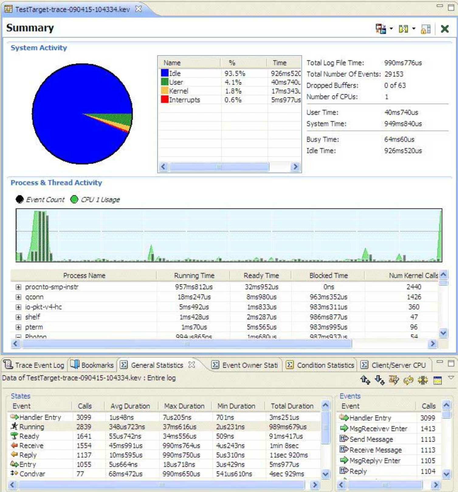

The IDE module of the System Analysis Toolkit (SAT) can serve as a comprehensive instrumentation control and post-processing visualization tool.
From within the IDE, developers can configure all trace events and modes, and then transfer log files automatically to a remote system for analysis. As a visualization tool, the IDE provides a rich set of event and process filters designed to help developers quickly prune down massive event sets in order to see only those events of interest.

For more information, see the IDE User's Guide.